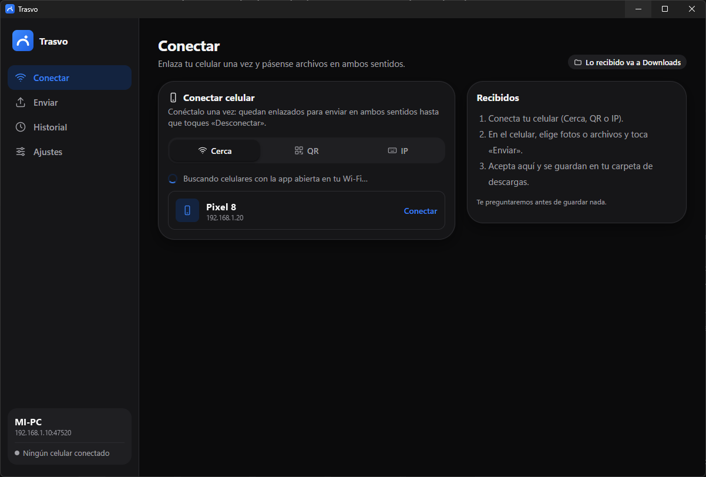
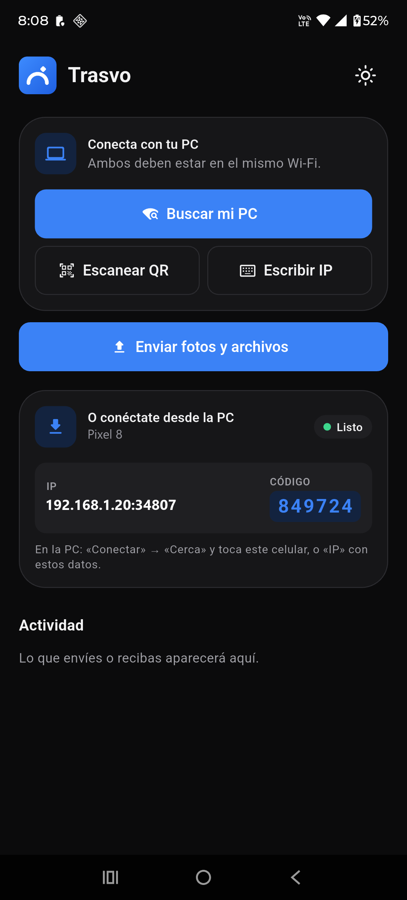

Pasa archivos entre tu PC y tu celular, por tu Wi-Fi.
Fotos, videos y documentos, directo de un equipo al otro. Sin cable, sin subir nada a la nube y sin crear cuentas.
Necesitas las dos: una en la PC y otra en el celular. Windows 10 u 11 y Android 7 o más nuevo.
Windows y Android te van a mostrar un aviso porque Trasvo es nueva y todavía no tiene firma paga.Android te va a mostrar un aviso porque Trasvo todavía no está en Play Store. Es normal. Mira cómo se ve y qué tocar.


Te conectas una vez y listo.
Después mandas archivos en los dos sentidos, las veces que quieras, hasta que toques «Desconectar».
-
Instala en los dos
El instalador de Windows y el APK del celular. La PC y el celular tienen que estar en el mismo Wi-Fi.
-
Conecta una sola vez
Toca tu PC en «Cerca», escanea el QR o escribe la IP y el código. El otro equipo te pregunta si aceptas.
-
Envía en cualquier sentido
Elige fotos, videos, documentos o carpetas. Quien recibe confirma antes de guardar, y cada archivo se verifica al llegar.
Antes de instalar: los dos avisos que vas a ver.
No son un virus. Aparecen con cualquier app nueva que no pagó la firma de Microsoft ni está en Play Store. Así se ven:
En Windows
Aparece un cuadro azul: «Windows protegió su PC». Toca Más información y después Ejecutar de todas formas. Si Windows pregunta por el Firewall, permite Redes privadas.
En Android
Android pide permiso para instalar apps fuera de Play Store: actívalo para Chrome. Después Play Protect ofrece analizar la app: toca Analizar app y luego Instalar.
Lo que hace, y lo que todavía no.
Preferimos que lo sepas antes de instalar.
Hoy hace
- Pasa archivos y carpetas de la PC al celular y del celular a la PC.
- Encuentra el otro equipo solo en tu Wi-Fi, o se conecta con QR o IP.
- Queda conectado y se reconecta solo si se corta el Wi-Fi.
- Te pregunta antes de guardar y comprueba que cada archivo llegó entero.
- Te deja elegir la carpeta donde llegan los archivos en la PC.
Todavía no
- No cifra lo que viaja por tu Wi-Fi. Úsala en la red de tu casa o trabajo, no en un Wi-Fi público.
- En Android, deja la app abierta mientras envía: si sales, se corta.
- No hay versión para iPhone, Mac ni Linux.
- No funciona por cable ni Bluetooth: hace falta un Wi-Fi compartido.
- Todavía no está en Play Store ni tiene firma de Microsoft.
Tus archivos van de un equipo al otro. No pasan por ningún servidor nuestro.
No hay cuenta ni anuncios, y el autor no recibe datos tuyos. No tenemos servidores: nosotros no vemos lo que mandas. (El lector de QR usa una librería de Google que puede enviarle métricas de uso; lo explicamos en Privacidad.)
El código está abierto para que cualquiera lo revise, y cada descarga publica su huella SHA-256 para que compruebes que es la original.
Preguntas rápidas
¿Es gratis? ¿Dónde está la trampa?
Es gratis y no hay trampa: no muestra anuncios, no vende datos y no tiene versión de pago. La hace un desarrollador independiente y el código es abierto (licencia MPL-2.0).
¿Necesito internet?
Necesitas que la PC y el celular estén en el mismo Wi-Fi (la PC también puede ir por cable al mismo router). Los archivos no salen a internet: van por tu red.
¿Por qué Windows dice que me protegió?
Windows avisa con cualquier programa que no tiene firma digital paga. Trasvo es nueva y todavía no la tiene. Te mostramos qué tocar y cómo comprobar que el archivo es el original.
Pasa tu primer archivo en un par de minutos.
Instala en la PC, instala en el celular, conecta una vez.